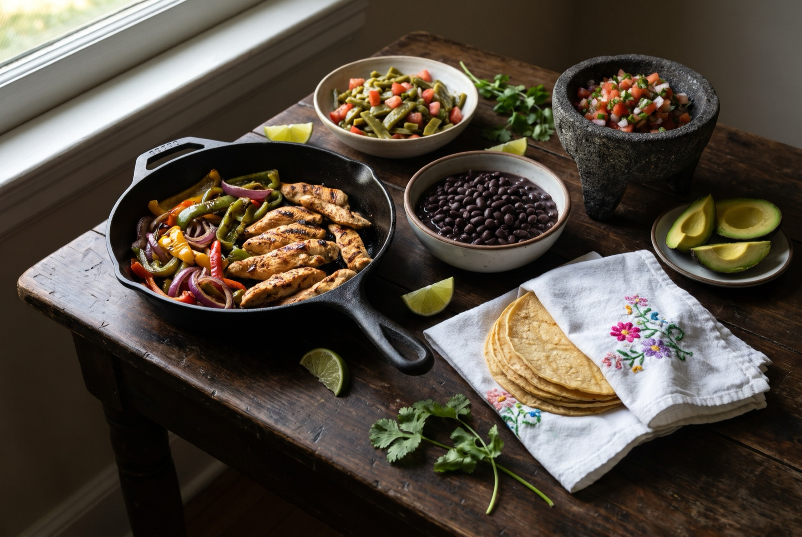
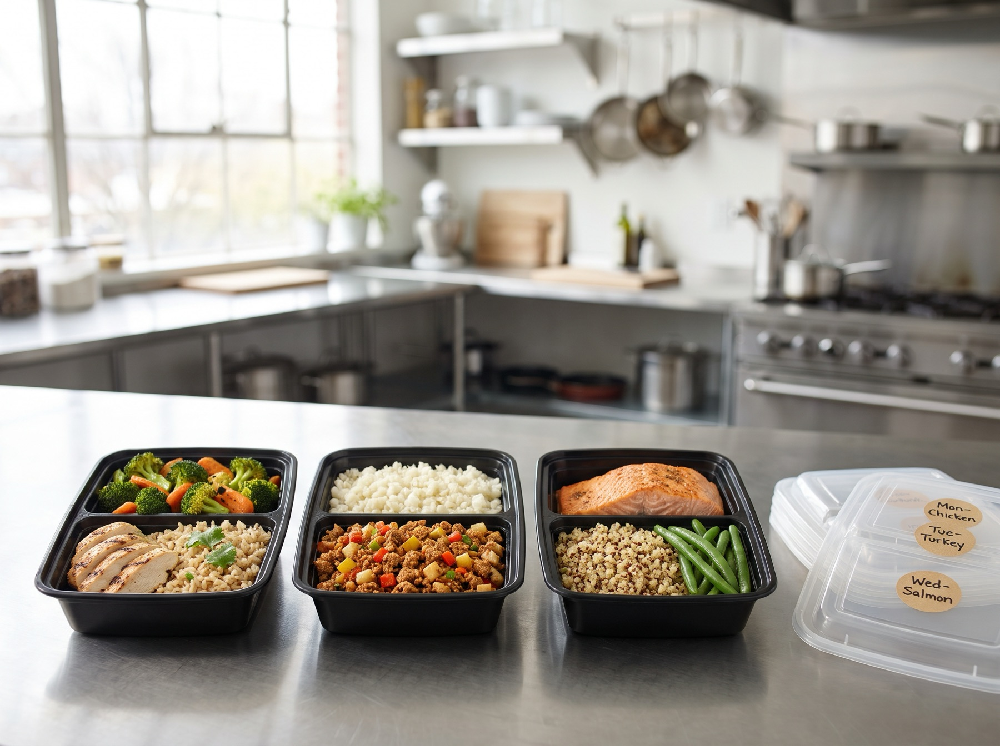
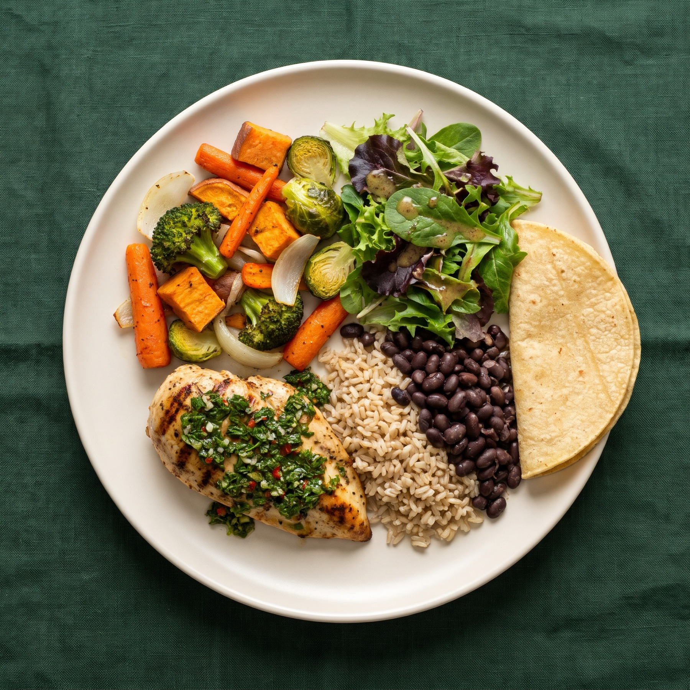

Registered dietitian in McAllen, Texas
Eat the food you love and still get your health back.
Peggy Ramon-Rosales, MS, RD, LD helps families across the Rio Grande Valley manage diabetes, lose weight, and feel stronger, with plans built around real food and covered by most major insurance.
Visits in person in McAllen, or by phone and video. Hablamos español.
- Blue Cross Blue Shield
- UnitedHealthcare
- Cigna
- Ambetter
- Medicare
- Medicaid: Superior & Driscoll
- HEB
- Walmart
- USPS
Find out if your visits are covered
Many insurance plans cover nutrition counseling with a registered dietitian. Pick your insurance or your employer's plan to see what to expect.
We confirm your benefits before your first visit, so there are no surprises.
Your answer will show here.
Can't find your plan? Call us at 956-424-2274 and we'll check it for you.
What we help with
Medical nutrition therapy for the conditions we see most in the Valley, and support for the everyday goals that matter just as much.
Diabetes & prediabetes
At least one in three people in the Rio Grande Valley live with diabetes.
We'll look at your labs and your plate together, then build meals that help bring your A1C down without cutting out rice, beans, or tortillas. Medicare covers these visits with a referral from your doctor.
See if you're covered- Weight loss & maintenance
- A steady plan you can live with, for adults and kids.
- Kidney disease
- CKD, dialysis, and transplant, from a former transplant dietitian.
- Gut health
- IBS, IBD, and gastritis, with a clear way to find your trigger foods.
- Pregnancy & postpartum
- Eating well for you and your baby, before and after birth.
- Children & teens
- Healthy growth and weight, with the whole family at the table.
- Sports nutrition
- Fuel for training, game days, and recovery.
- Thyroid conditions
- Food choices that support your treatment and your energy.
- Food allergies & intolerances
- Eat safely without a diet that feels like a list of no.
- Eating disorders
- Patient, judgment-free care alongside your treatment team.
- Energy, mood & stress
- How food affects fatigue, anxiety, and low mood.

Built around the food already on your table
“I want to inspire and motivate you to transform your health by using the power of food.”Peggy Ramon-Rosales
- Science, not trends
- Every recommendation comes from a registered dietitian and current research, not the latest diet online.
- Real food you know
- We cook, so your plan comes with practical meals and swaps for the dishes your family already makes.
- Made for busy weeks
- Flexible plans for work, kids, and late nights, with meal preps when you need a hand.
- Results you can measure
- More energy, better labs, and body composition you can track on our 3D scanner.
How working together goes
-
1
Call or request a visit
We check your insurance and book a time that fits your schedule.
-
2
Your first visit
We review your health history, labs, and how you eat now, then agree on goals.
-
3
A plan that's yours
You leave with a meal plan, portion guidance, and swaps for your favorite foods.
-
4
Follow-ups
We track your progress, adjust the plan, and scan body composition if you'd like.
-
5
Keep it going
Habits that last, with meal preps for the weeks that get away from you.
In our clients' words
“In three months she was able to help me get [my A1C] from a 10 which is very high to a 4.9 that is excellent. I thank God for her and to the medicines that got me to my goal, but I give credit to her diet plan and meals that changed me all together.”
“I lost 36 pounds in 3 months and haven't had issues with my diagnosis. Peggy is patient and spends enough time explaining the best way to eat healthy.”
“Peggy is friendly, encouraging, and non-judgemental! Great accountability partner.”
Reviews shared publicly on Google and Facebook. Individual results vary.

Your week, already cooked
PR Meal Preps are dietitian-designed meals made for you, so you can focus on work, family, and yourself. Each order is portioned to your goals, and Peggy can help you choose the right macro level at your visit.
- Made for you
- Choose meals by macro level, from weight loss to active training.
- Pickup
- Sundays and Wednesdays, 3:30–6 pm at our McAllen office.
“Excellent service and delicious meal preps! By far the best meal preps I've had!”Casara R.

See what's changing, not just what the scale says
Our FIT3D body scanner builds a 3D model of your body in under a minute. You'll see body fat, lean mass, and measurements, and how they change from visit to visit.
- Fully clothed in fitted activewear, nothing invasive
- Results shared with you on your phone
- Useful for weight loss, strength training, and sports
For employers, restaurants & care providers
We bring a registered dietitian to your workplace, your menu, and your care facility.
Email us about a program- Lunch & learn talks
- 30-minute nutrition seminars for your staff, on site.
- Weight loss challenges
- Company-wide challenges with check-ins and coaching from a dietitian.
- Menu building & analysis
- Nutrition facts and healthier options for restaurant menus.
- Home health & daycare
- Menu planning and consulting that meets nutrition standards.
Meet Peggy
Peggy Ramon-Rosales is a registered and licensed dietitian who has helped hundreds of people in the Rio Grande Valley eat better without giving up the food they grew up with.
Before opening her own practice, Peggy worked as a transplant dietitian at the South Texas Transplant Center, helping patients reach and keep the health goals they needed for surgery. Today she sees clients in English and Spanish, in person and online.
She believes health is more than the absence of disease. It's feeling strong, having energy for your family, and enjoying your meals. Her approach is grounded in science and shaped by real kitchens: she knows how to cook, and she'll show you how to make the dishes you love work for your health.
- Education
- MS, Human Sciences, Texas A&M University–Kingsville
BS, Family & Consumer Sciences (Nutrition), Texas State University - Credentials
- Registered Dietitian (RD)
Licensed Dietitian in Texas (LD) - Member
- Academy of Nutrition and Dietetics
Diabetes Care & Education practice group - Languages
- English and Spanish
Questions we hear often
Something else on your mind? Call 956-424-2274 or email info@prdietitian.com.
Do I need a referral from my doctor?
Some plans, including Medicare, ask for one. When you call, we'll check what your plan needs and help you get it.
What happens at my first visit?
We go over your medical and nutrition history, what a normal day of eating looks like for you, and your goals. You leave with a meal plan and portion guidance you can start that day.
Can I meet with Peggy online?
Yes. Visits are available in person at our McAllen office, by phone, or by video.
Does Medicaid cover my visits?
Superior and Driscoll Medicaid cover nutrition visits for patients 20 and under. Patients 21 and over can see us as self-pay.
Do you see children?
Yes. We work with kids and teens on healthy weight, sports nutrition, and food allergies, and we involve the whole family.
How do meal preps work?
Place your order through our online form, then pick up your meals on Sunday or Wednesday between 3:30 and 6 pm. If you're not sure which macro level to choose, Peggy can help at your visit.
Book your visit
Call, email, or send a request and we'll get back to you to confirm your coverage and a time.
956-424-2274 info@prdietitian.com 8025 N 10th St, Suite 160McAllen, TX 78504
Get directions
| Monday–Thursday | 10 am – 6 pm |
|---|---|
| Friday | 10 am – 5 pm |
| Saturday | By appointment |
| Sunday | 3:30 – 6 pm, meal prep pickup |